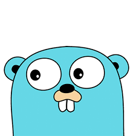

Sejarah Golang

Go (sering disebut sebagai Golang) adalah bahasa pemrograman yang dibuat di Google pada tahun 2009 oleh Robert Griesemer, Rob Pike, dan Ken Thompson. Go adalah bahasa pemrograman sumber terbuka yang mudah, sederhana, efisien. Selain itu, Go memiliki level yang sama dengan Java. Yaitu bahasa pemrograman yang dihimpun dan diketik dalam bahasa C, dengan fitur garbage collection, penulisan terstruktur, keamanan memori, dan pemrograman yang konkuren serta berurutan. Kompiler dan IDE lainnya disediakan oleh Google dari awal secara bebas dan sumber terbuka. Bahasa pemrograman satu ini bisa diketik secara statis dan dapat menghasilkan kode-kode biner pada mesin yang dikompilasikan dengannya. Berasal dari abad ke-21, bahasa pemrograman Golang berusaha menghimpun bahasa-bahasa pemrograman pendahulunya. Pembuatan website, aplikasi maupun software juga bisa menggunakan bahasa pemrograman ini.
Fungsi Golang
Setelah memahami apa itu golang, berikut beberapa fungsi dari bahasa pemrograman golang:
- Membantu membangun tim developer yang lebih scalalable
- Mengembangkan teknologi penyimpanan berbasis online dengan media penyimpanan yang besar
- Merancang aplikasi dengan basis web yang memiliki keamanan tinggi
- Membangun sebuah sistem yang memiliki kinerja tinggi dan lebih kompleks
- Mengembangkan kode server pada jaringan web server dan layanan mikro
7 Keunggulan yang Dimiliki Bahasa Pemrograman Golang
Golang memiliki keunggulannya tersendiri di antara sekian banyak bahasa pemrograman yang ada. Adapun keunggulan dari bahasa pemrograman Golang adalah sebagai berikut:
- Platformnya bersifat open source
- Golang memiliki fitur garbage collector, yang artinya sistem pengelolaan memorinya lebih mudah. Jika dibandingkan bahasa pemrograman lainnya Golang dengan mudah dapat mengumpulkannya dalam satu garbage collector.
- Struktur data dan algoritmanya mudah untuk dipelajari oleh pemula. Gaya sintaks Golang dinilai lebih sederhana sehingga lebih mudah dipahami dibandingkan bahasa pemrograman lainnya.
- Golang bisa meningkatkan performa, sehingga lebih mudah membuat pengunjung berkunjung ke aplikasi. Golang dikompilasikan ke dalam kode mesin, karenanya kecepatannya mampu melampaui bahasa pemrograman lainnya.
- Golang akan memberikan pemberitahuan apabila dalam proses kompilasi terjadi kesalahan pengetikan.
- Golang mampu membuat aplikasi dengan menggunakan waktu yang singkat dan biaya yang paling rendah dibandingkan lainnya.
- Developer tidak perlu khawatir aplikasi akan mengalami crash, karena Golang telah dipakai perusahaan-perusahaan besar. Bahasa pemrograman Golang telah terbukti kemampuannya dan unggul di kelasnya.